China Employee Termination 2026: Pulse Readiness-Ladder Brief for Foreign Employers
Key takeaways
- Foreign employers can cut China termination risk by using a readiness ladder: move up only when each rung is proven.
- The highest-value rungs are route legality, evidence integrity, payroll/tax closure, and communication discipline.
- Skipping a rung usually causes downstream disputes and rework.
- City-level interpretation should be a mandatory rung, not a side note.
- This brief is impact-first; legal depth is secondary in the appendix.
What changed and why this matters now
Many teams treat readiness as binary: ready or not. In practice, China termination readiness is incremental. Cases become fragile when teams jump from partial legal review to communication planning without completing intermediate controls. A ladder model makes progression explicit and auditable: each rung has criteria, owners, and stop rules.
This run rotates to a readiness-ladder format (distinct from prior mistake-reversal/pathfinder/thermostat/escalation/rhythm variants) to improve operator clarity for cross-border teams.
Plain-language legal context first
China employer-initiated termination generally requires a lawful basis, coherent factual support, and compliant execution sequence. Public legal anchors include the PRC Labor Contract Law framework, implementing regulation references (including Decree No. 535 context), and Supreme People’s Court labor-dispute interpretation materials. For foreign clients, the practical translation is simple: legality and operational sequencing must align.
A readiness ladder turns that into a controlled progression model.
Pulse readiness ladder (impact-first)
Rung 1 — Route Basis Confirmed
Goal: confirm route fits facts and has defensible legal rationale.
Evidence needed: route memo + fallback logic.
Block rule: no route clarity, no progression.
Rung 2 — Local Calibration Confirmed
Goal: align route with city-level practical interpretation.
Evidence needed: local interpretation memo and unresolved-point tracker.
Block rule: unresolved local conflict blocks next rung.
Rung 3 — Evidence Chain Confirmed
Goal: establish contradiction-free chronology with source ownership.
Evidence needed: chronology ledger + contradiction closure notes.
Block rule: material contradiction = hold.
Rung 4 — Payroll/Tax Closure Confirmed
Goal: finalize pay/severance/IIT/social handling before communication.
Evidence needed: approved payroll worksheet + payment-proof workflow.
Block rule: any unresolved payroll/tax element = no-go.
Rung 5 — Communication Control Confirmed
Goal: ensure script and spokesperson control align with legal/payroll facts.
Evidence needed: approved script package + briefing records.
Block rule: unbriefed speaker or off-script risk blocks execution.
Rung 6 — Closure Readiness Confirmed
Goal: ensure case can be rapidly reconstructed if challenged.
Evidence needed: closure memo + indexed archive map.
Block rule: case cannot close without retrieval test.
Why this helps foreign employers
Foreign HQ teams often need a clear progress signal without deep legal reading. The ladder provides a simple dashboard: which rung each case is on, what blocks advancement, and who must act. This improves accountability and avoids premature scheduling decisions.
Practical scenarios
Scenario 1: Team tries to jump from Rung 1 to communication
Route memo exists, but payroll closure and local calibration are unfinished.
Ladder response: hold at current rung; no shortcut allowed.
Scenario 2: Case reaches Rung 4, evidence contradiction reappears
Late manager update conflicts with earlier records.
Ladder response: step back to Rung 3 and resolve before re-advancing.
Scenario 3: All core controls green, archive still weak
Execution completes but closure package is fragmented.
Ladder response: keep case open until Rung 6 is complete.
Role-owned SOP (ladder governance)
Step 1 — Assign rung owners at case opening
Owners: HRBP + Legal + Payroll lead
- Map each rung to owner and backup.
Step 2 — Validate rung criteria in order
Owners: designated rung owners
- Attach evidence and sign-off per rung.
Step 3 — Enforce block rules
Owners: cross-functional panel
- Prevent advancement when criteria are incomplete.
Step 4 — Publish rung status memo
Owners: HR lead + Legal + Payroll
- Record current rung and blockers daily.
Step 5 — Post-case ladder review
Owners: Compliance + operations lead
- Analyze where cases stall and why.
Required document checklist
- Employee profile and contract context
- Route rationale memo + fallback route
- City-level interpretation memo
- Evidence chronology ledger
- Script package and briefing records
- Payroll/severance/IIT/social worksheet
- Settlement and acknowledgment records
- Payment proof artifacts
- Ladder progression log
- Closure memo and archive index
Exception handling playbook
- New fact breaks earlier rung: step back and revalidate before moving up.
- Owner unavailable: activate backup owner and preserve SLA.
- Cross-functional disagreement: issue evidence-based tie-break note.
- External deadline pressure: block override unless formal risk acceptance approved.
- Repeated stall at same rung: launch process redesign for that rung.
System implementation notes
- Add rung-state fields and required-evidence checks in workflow.
- Automate advancement locks and rollback triggers.
- Alert on prolonged stall duration per rung.
- Track KPIs: average time per rung, rollback frequency, dispute outcomes.
- Use monthly analytics to improve rung criteria and training.
Common mistakes and prevention
- Mistake: treating readiness as binary.
Prevention: enforce rung-by-rung progression.
- Mistake: skipping local calibration.
Prevention: mandatory Rung 2 gate.
- Mistake: payroll closure after communication prep.
Prevention: hard Rung 4 no-go rule.
- Mistake: no rollback discipline.
Prevention: automatic step-back on contradiction.
- Mistake: weak closeout governance.
Prevention: Rung 6 retrieval requirement.
What to do now
- Implement a six-rung readiness ladder across active China termination cases.
- Assign owner/backups and SLAs for each rung.
- Enforce strict in-order progression with no shortcuts.
- Add rollback triggers for newly discovered contradictions.
- Track stall and rollback metrics weekly.
- Train managers on communication rung prerequisites.
- Use rung analytics to strengthen templates and controls.
What to watch next
- Local practice shifts may increase Rung 2 complexity.
- Case-volume spikes can slow Rung 4 payroll closure.
- Practitioner updates may tighten evidence standards at Rung 3.
FAQ
1) Why use a ladder instead of a checklist?
A ladder enforces sequence and prevents premature progression.
2) Can a case move up if one rung is partially complete?
No, not for critical rungs (route/evidence/payroll/local).
3) When should rollback happen?
Immediately when new facts invalidate a completed rung.
4) Who owns final go/hold?
Cross-functional HR, legal, and payroll leadership.
5) Is local calibration always required?
Yes, because city-level practice can materially affect defensibility.
6) What is the biggest avoidable error?
Jumping to communication before payroll and evidence rungs are complete.
7) How does this improve over time?
By measuring stall/rollback patterns and fixing recurrent weak points.
Legal depth appendix (secondary)
This brief is grounded in official/legal and practitioner materials relevant to employer-side termination operations in China. Core anchors include the PRC Labor Contract Law framework, implementing regulation references associated with Decree No. 535 context, and Supreme People’s Court labor-dispute interpretation materials. Practitioner and payroll-context sources support practical interpretation for foreign employers. Residual uncertainty remains city- and fact-specific and should be validated with localized professional review for live matters.
Disclaimer
This content is informational only and does not constitute legal, tax, or employment advice.
Sources
- National People’s Congress (Labor Contract Law, English text), accessed 2026-03-05: http://www.npc.gov.cn/zgrdw/englishnpc/Law/2007-12/13/content_1384064.htm
- State Council Gazette reference (implementing regulation / Decree No. 535 context), accessed 2026-03-05: https://www.gov.cn/gongbao/content/2008/content_1124615.htm
- Supreme People’s Court labor dispute interpretation update page, accessed 2026-03-05: https://www.court.gov.cn/fabu/xiangqing/243981.html
- China Briefing, Employee Termination in China, accessed 2026-03-05: https://www.china-briefing.com/news/employee-termination-in-china/
- ICLG Employment & Labour Laws and Regulations: China, accessed 2026-03-05: https://iclg.com/practice-areas/employment-and-labour-laws-and-regulations/china
- Littler ASAP analysis on China employment law developments, accessed 2026-03-05: https://www.littler.com/news-analysis/asap/key-recent-developments-chinas-employment-law-china-us-comparative-perspective
- PwC PRC Individual Income Tax summary, accessed 2026-03-05: https://taxsummaries.pwc.com/peoples-republic-of-china/individual/taxes-on-personal-income
Add-on: Rung audit grid
| Rung | Pass evidence | Owner | Typical failure signal |
|---|---|---|---|
| 1 Route basis | Route memo + fallback | Legal lead | Generic rationale |
| 2 Local calibration | City memo | Local counsel coordinator | Conflicting local advice |
| 3 Evidence chain | Chronology ledger | HR Ops/Compliance | Contradictory timeline |
| 4 Payroll closure | Final calc + IIT/social map | Payroll/Tax | Pending payout element |
| 5 Communication control | Script + briefing record | HR lead | Unbriefed spokesperson |
| 6 Closure readiness | Indexed archive + retrieval test | Compliance/Records | Fragmented documents |
Need local employment support in China?
If you need a compliance-first partner for hiring, payroll, and risk controls in China, China-Payroll.com can help evaluate the right setup.
Image Prompt Pack
Create a 16:9 hero image for article title: 'China Employee Termination 2026: Pulse Readiness-Ladder Brief for Foreign Employers'. Scene: global operations team evaluating workforce model options for China market entry. Include motifs: decision matrix, org cha…